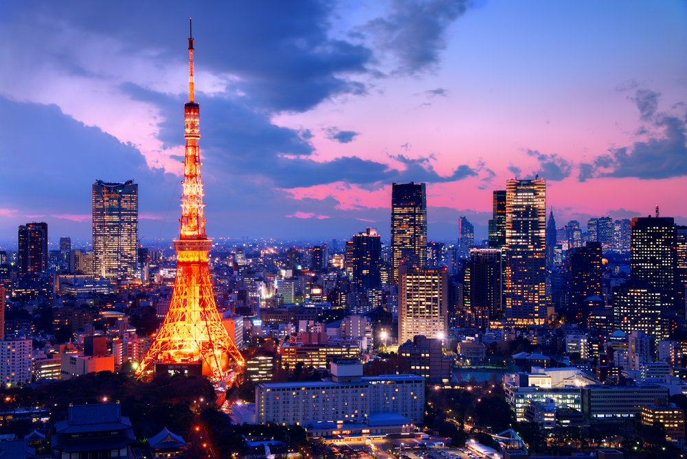

Top Attractions

Tokyo Tower
Marvel at Tokyo's skyline from this iconic tower.

Sensoji Temple
Experience the charm of Tokyo's oldest temple.
Unveil the beauty of Tokyo with our ultimate travel guide.
Marvel at Tokyo's skyline from this iconic tower.
Experience the charm of Tokyo's oldest temple.
Map loading...
Explore hidden gems in Tokyo's side streets for authentic izakaya dining experiences. Don't forget to try matcha desserts!
Avoid peak hours (7:30–9:00 AM and 5:00–7:00 PM) on the metro for a more relaxed commute. Use Google Maps or the Hyperdia app for navigation.
Shop tax-free at major department stores. Remember to bring your passport for a discount on purchases above ¥5,000.
When using escalators, stand on the left side in Tokyo (right in Osaka). Learn a few phrases like "Arigatou" (Thank you) and "Sumimasen" (Excuse me) for politeness.
Visit during spring for cherry blossoms (hanami) or fall for stunning autumn foliage. Both seasons offer breathtaking scenery.